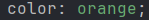

CSS Basics
CSS Selector
CSS selectors are used to "find" (or select) the HTML elements you want to style.
We can divide CSS selectors into five categories:
- Simple selectors (select elements based on name, id, class)
- Combinator selectors (select elements based on a specific relationship between them)
- Pseudo class selector (select elements based on a certain state)
- Pseudo-elements selector (select and style a part of an element)
- Attribute-selector (select elements based on an attribute or attribute value)
Hover over me to see the code

CSS Colors
There are many ways to demonstrate colors in CSS:
- Normal color description
 - Hex color

- RGB

Background properties
There are many background properties, here are the most important:
- background-color
The background-color defines the background color of an element, this works as follows
- background-image
This property sets the background image to the given value

- background-repeat
By default, the background-image property repeats an image both horizontally and vertically.
If the image above is repeated only horizontally (background-repeat: repeat-x;), the background will look better:

- background-attachment
This defines wheter the background image should be scrolled or fixed

- background (shorthand)
With this you can define things such as color, image or attachment, in one declaration

Text
You can edit your text with tags like:
Fonts
Generic Font Families:
In CSS there are five generic font families:
- Serif fonts have a small stroke at the edges of each letter. They create a sense of formality and elegance.
- Sans-serif fonts have clean lines (no small strokes attached). They create a modern and minimalistic look.
- Monospace fonts - here all the letters have the same fixed width. They create a mechanical look.
- Cursive fonts imitate human handwriting.
- Fantasy fonts are decorative/playful fonts.
font-family tag:
In CSS, we use the font-family property to specify the font of a text.
For example:
You can set the font size
You can also use a stylesheet from Google, you have to define it in the header as a stylesheet
Link
A link has four states:
- unvisited
- visited
- active
- hover
You can style these states for example:

There are also rules for this styling like:
- a:hover MUST come after a:link and a:visited
- a:active MUST come after a:hover
Advanced CSS
There are 2 types of box models:
- Inline Element:
These elements have no margin around them therefore new elements are written in the same line